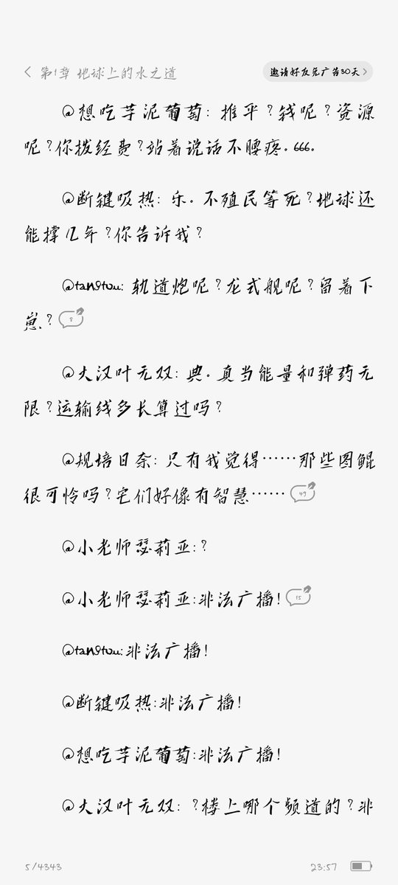
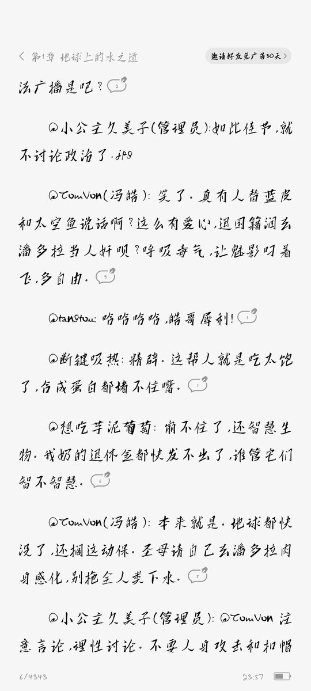
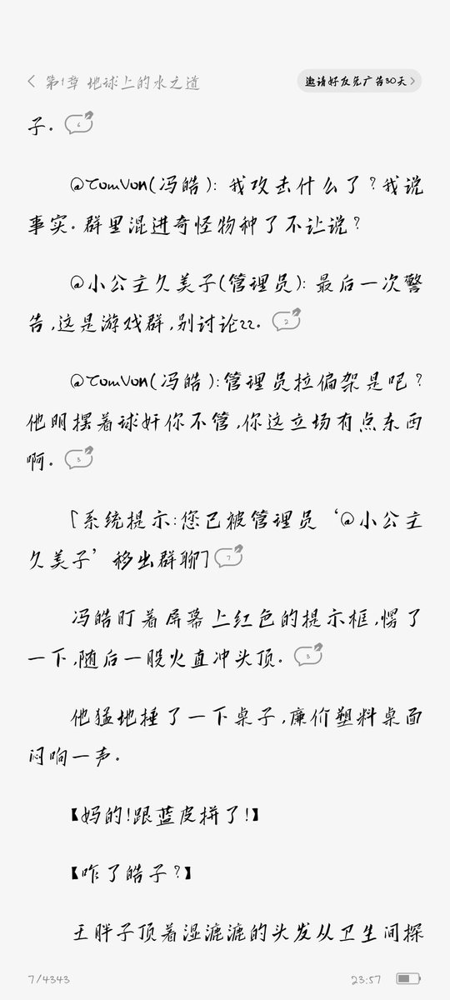

简介里倒是蛮贴心的告诉读者这是一本人类至上主义的小说，不爱看请别打扰。那么人类至上主义有错吗？一点没有，假如真的有外星人，那么人类至上主义当然是完全正确的，因为当今社会谈论的一切普世价值，平等、自由甚至于马克思主义都是基于人类社会的基础上，都要为人服务的。




才看一章就给我看笑了，键政真的是已经深入到我们社会生活的方方面面了，就连此前一直以无脑爽文著称的番茄也出现了如此露骨的政治宣传式的文学作品
我们来看他这本书讲的是什么：大概内容就是在另一个平行世界的阿凡达电影宇宙中，人类公司一方赢得了战争胜利，最终成功殖民了潘多拉星球。 https://t.co/k7xWEpqM4O
我们来看他这本书讲的是什么：大概内容就是在另一个平行世界的阿凡达电影宇宙中，人类公司一方赢得了战争胜利，最终成功殖民了潘多拉星球。 https://t.co/k7xWEpqM4O